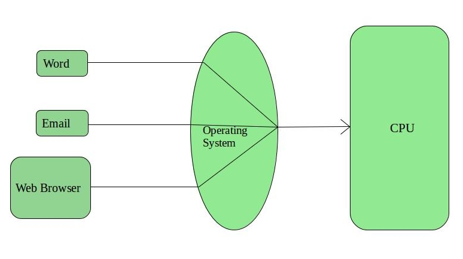

What is an operating system?
An operating system is the most important software that runs on a computer. It manages the computer's memory and processes, as well as all of its software and hardware. It also allows you to communicate with the computer without knowing how to speak the computer's language. Without an operating system, a computer is useless.
The operating system's job
Your computer's operating system (OS) manages all of the software and hardware on the computer. Most of the time, there are several different computer programs running at the same time, and they all need to access your computer's central processing unit (CPU), memory, and storage. The operating system coordinates all of this to make sure each program gets what it needs.

Features of Operating System
- Protected and supervisor mode
- Allows disk access and file systems Device drivers Networking Security
- Program Execution
- Memory management Virtual Memory Multitasking
- Handling I/O operations
- Manipulation of the file system
- Error Detection and handling
- Resource allocation
- Information and Resource Protection

An advantage of an operating system:-
- The operating system provides the interface between the user and the hardware.
- It can be easily used because it has a graphical user interface, and new users can run computers easily by this.
- Accessing hardware without writing programs: – Operating system provides us the facility to access hardware without writing programs.
- Through this, we can share one data with a lot of users.
- Through this, we can share resources such as – Printer, Modems, Fax-machines, Players, etc
- It can be easily updated.
- It is safe like – windows have windows defender which detects any type of harmful files and removes them.
Disadvantages of using Operating System:-
- If any issue occurs in OS, you may lose all the contents which have been stored in your system
- Operating system's software is quite expensive for small size organization which adds burden on them. Example Windows
- It is never entirely secure as a threat can occur at any time